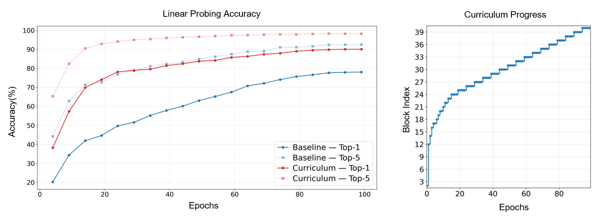

Abstract
Vision Foundation Models (VFMs) with Vision Transformer (ViT) backbones, such as DINOv2, have become essential for downstream tasks like object recognition and semantic segmentation. The immense computational requirements of backbones often necessitate distillation into smaller architectures for edge deployment. Feature-based knowledge distillation (KD) often suffers from the teacher–student gap; the student struggles to imitate the teacher's complex feature map due to its limited capacity.
To mitigate this bottleneck, we propose LEAP: Layer-skipping Efficiency via Adaptive Progression, a training curriculum for ViT feature-based knowledge distillation. By utilizing the teacher's intermediate feature maps as a sequence of progressively more difficult targets, our curriculum allows the student to build a foundational representation before tackling higher-level abstractions. Our results demonstrate that this paradigm significantly accelerates convergence through adaptive difficulty selection across various student model sizes and dataset scales.
With our curriculum, the LEAP-distilled ViT-S achieves 90.1% accuracy on ImageNet-100, a +12.24% improvement over the baseline. On ImageNet-1K, LEAP achieves +3.84% and +7.75% improvement for the instance retrieval task on the Oxford and Paris datasets, respectively. Furthermore, the curriculum enables 25.1% savings in training FLOPs and 21% savings in training time on ImageNet-100 by implementing early-stopping for teacher inference during the initial stages of training.

Faster convergence. Left: LEAP's linear-probing accuracy outpaces the baseline from the very first epochs. Right: the curriculum advances quickly through shallow blocks and dwells on deeper, more semantic ones.
Key Results
Table 1. Linear probing & training efficiency comparison.
| Method | Lin. Probe (patch) ↑ | Lin. Probe (CLS) ↑ | mini-IN-C ↑ | FLOPs Saving | Train Time Saving |
|---|---|---|---|---|---|
| Baseline (ViT-S) | 77.86% | 77.12% | 47.80% | — | — |
| Baseline (ViT-Tiny) | 75.90% | 76.04% | 46.90% | — | — |
| LEAP (ViT-S) | 90.10% | 89.66% | 66.69% | 25.1% | 21% |
| LEAP (ViT-Tiny) | 81.76% | 82.02% | 51.74% | 28.82% | 22.5% |
Table 2. Instance recognition performance (mAP) on the Oxford and Paris datasets.
| Method | roxford5k | rparis6k | ||||||
|---|---|---|---|---|---|---|---|---|
| E | M | H | Mean | E | M | H | Mean | |
| Baseline (ViT-S) | 10.28 | 8.80 | 2.15 | 7.08 | 24.83 | 21.29 | 7.25 | 17.79 |
| Baseline (ViT-Tiny) | 8.04 | 7.72 | 1.84 | 5.87 | 21.35 | 19.42 | 6.59 | 15.79 |
| LEAP (ViT-S) | 22.56 | 17.30 | 4.81 | 14.89 | 53.84 | 40.99 | 15.97 | 36.93 |
| LEAP (ViT-Tiny) | 14.70 | 12.15 | 2.84 | 9.90 | 43.39 | 33.36 | 12.38 | 29.71 |
Table 3. Semantic segmentation performance on ADE20K.
| Method | Linear Seg. (mIoU) ↑ | EOMT val (mIoU) ↑ | MS (mIoU) ↑ |
|---|---|---|---|
| Baseline (ViT-S) | 12.15% | 24.49% | 24.62% |
| Baseline (ViT-Tiny) | 9.51% | 15.41% | 14.88% |
| LEAP (ViT-S) | 20.53% | 38.10% | 39.36% |
| LEAP (ViT-Tiny) | 14.71% | 21.67% | 21.82% |
Table 4. Comparison of distillation alignment strategies.
| Alignment Strategy | Linear Probing ↑ | Projectors (Params) |
|---|---|---|
| Baseline (last-layer only) | 81.80% | ×1 (0.07M) |
| One-to-one Alignment | 83.38% | ×12 (0.89M) |
| LEAP | 83.36% | ×1 (0.07M) |
BibTeX
@article{zhang2026leap,
title = {LEAP: Layer-skipping Efficiency via Adaptive Progression for Vision Transformer Distillation},
author = {Zhang, Jiaqi and Lee, Ashton and Wong, Anthony and Zou, John and BuGhanem, Sami and Balestriero, Randall},
journal = {arXiv preprint arXiv:XXXX.XXXXX},
year = {2026}
}